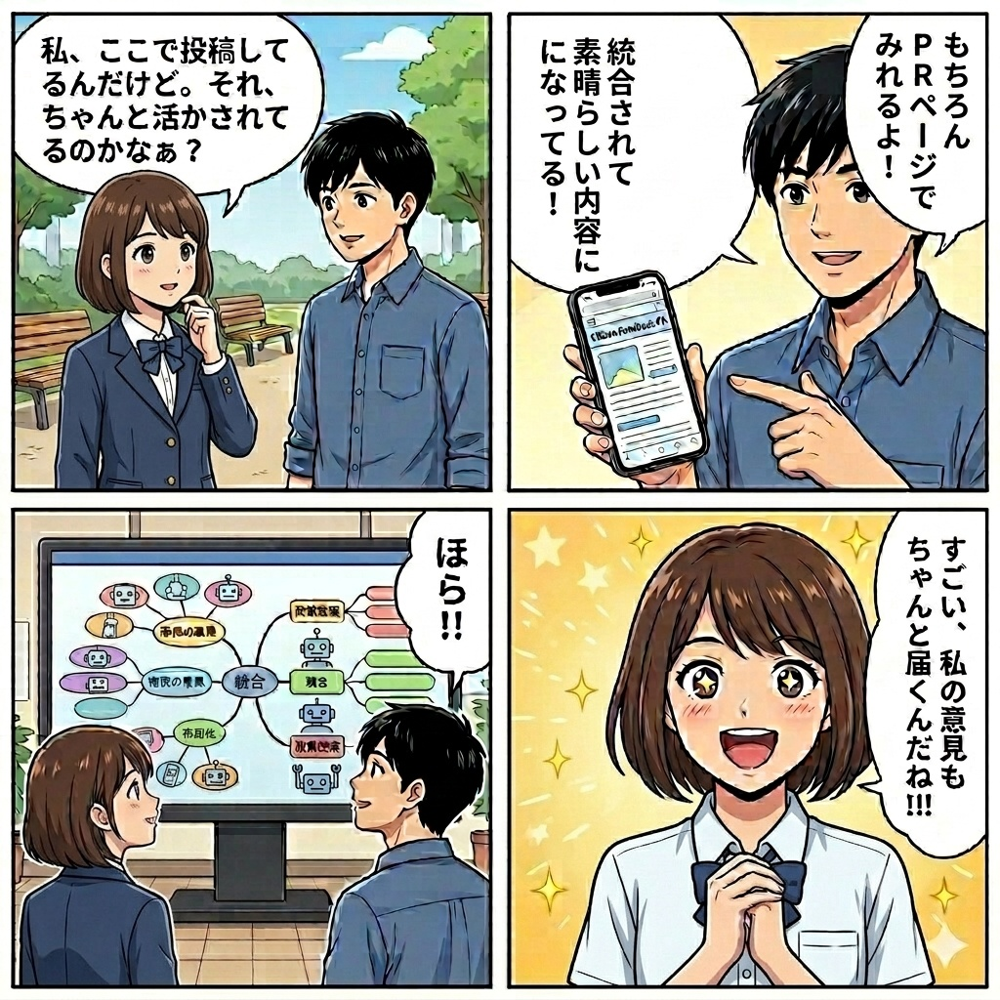
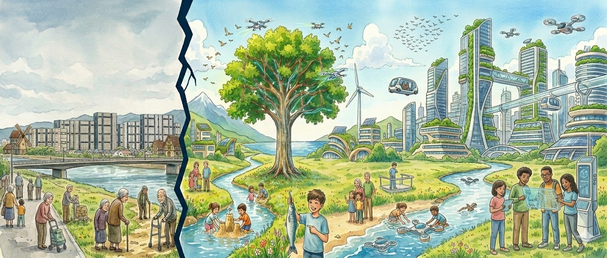

駅前公共施設について皆で考えよう
このプラットフォームについて
このプラットフォームは、駅前の公共施設について、みなさんの声を自由に投稿できる場所です。投稿された意見は、AIが公平に整理し、誰もが見える形にしていきます。
設問はありません。自由に書いた声を、AIが公正な手法で整理し、誰もが確認できる形に残します。
 >
>
特徴
- 思いついたまま、自由に書き込めます
- AIがあなたの声を読み取り、わかりやすく整理します
- 整理された意見は、ツリーの形で誰でも見られます
- どう整理されたか、その過程もすべて公開されます
- みんなの声が、少しずつ積み重なっていく仕組みです
投稿の流れ
自由に投稿する → AIが整理する → ロジックツリーにまとまる → みんなで眺められる
🏛 政策提案ロジックツリー
コストセンターからプロフィットセンターへ：市民のウェルビーイングと知財の集積による投資型都市経営の実現

🤖 AI壁打ち

あなたの考えを聞かせてください
思っていることを自由に書いてください。AIが内容を読んで自動的に分類します。
AIからの整理結果
結果はここに表示されます。
📊 統合と分析のしくみ

まずはこの4コマをどうぞ！
「私の意見、ちゃんと届いてるの？」という疑問にお答えします。

書いた意見は、AIが内容を読み取り、テーマに合ったカテゴリに自動で整理されます。PRページを見ると、あなたの意見がしっかり反映されているのが確認できます。
同じテーマの投稿が集まると、AIがそれらをまとめて「ひとつの提案」として整理します。あなたの意見は、他の市民の声と合わさって、より力強い提案へと成長していきます。
投稿された意見はすべて、このプラットフォームの「ロジックツリー」に記録されます。小さな一言も、まちの未来を考える大切なデータです。どうぞ遠慮なく投稿してください。
🌟 かんたん3ステップで完結します
難しいことは考えなくてOK
カテゴリに自動で分類
みんなが見られる形に
📊 現在の市民の声 — AI分析サマリー
※ 以下は模擬データです。投稿が積み重なると自動更新されます。
総投稿数
統合済み記事
Civic Visionとの整合性
ビジョン更新の必要性
大分類別の投稿割合 vs. 当初想定
🔍 Civic Visionとの整合性評価
市民の声のパターンを現在の Civic Vision と照合した結果、以下のインサイトが得られています。
- ✅ 「市民のウェルビーイング向上」への関心は想定以上（+5%）。カフェ・コミュニティ・リスキリング系の投稿が多く、Civic Visionの方向性と高く整合している。
- ✅ 「価値向上・移住促進」も想定を上回る（+3%）。絵本図書館・EdTech・公園芝生化の関心が高く、子育て世代へのアピールポイントとして機能しそう。
- ⚠️ 「施設の戦略性（デジタル・起業支援）」は想定より低い（−3%）。デジタルライブラリ・ピッチアリーナ等への言及はあるが、関心の絶対数が少ない。認知度向上の施策が必要かもしれない。
- 🚩 「都市の強靭性・ガバナンス」が想定を大きく下回る（−7%）。DAO型投票・トークン設計等への市民関心は現時点では低い。Civic Visionにおける本大分類の優先度を見直す議論が必要。
📋 PULL REQUEST

カテゴリー別の提案一覧
大分類ボードをクリックすると中分類が展開されます。中分類をクリックすると、格納された投稿が表示されます。
🧭 CIVIC VISION — プロジェクトの羅針盤

コストセンターからプロフィットセンターへ
芦屋市の公共施設を、維持費がかかる「コスト」としてではなく、
市民のウェルビーイング・知・経済価値を生み出す投資型の都市拠点として再定義する。
市民の自由なアイデアと最先端テクノロジーが交わり、街全体の価値を上げ続ける場所へ。
🎯 なぜ「Civic Vision」が最も大切か
民間のプロジェクトには必ず「原点」があります。進行中も原点に立ち返ることが目的達成の最短距離です。
このプラットフォームは、行政における意思決定プロセスにその考え方を持ち込みます。
❌ 従来の行政プロセス
- 計画を立てたら計画通りに進めることが第一義
- 意見収集は「聴いた」という実績づくりが優先
- ビジョンの見直しは例外的・消極的
- 市民の声とビジョンの整合性は不可視
✅ このプラットフォームの試み
- 市民の声がAIで分析・構造化され続ける
- ビジョンとの「ずれ」が定量的に可視化される
- ずれが大きければビジョン変更の議論ができる
- 変更の理由と根拠がすべて記録される
🔺 3層の構造と役割
このプラットフォームは3層で構成されます。上から下へ「方向づけ」が流れ、下から上へ「市民の声」が積み上がる双方向の仕組みです。
Level 3 が積み重なると Level 2（ツリー）が育ち、
Level 2 の傾向が Level 1（羅針盤）の見直しを促す。これが「生きた政策立案」です。
📜 Civic Vision の変遷記録
変更するたびに「なぜ変えたか」の理由と根拠をここに記録します。これがプロジェクトの透明性と説明責任の核心です。
「駅前施設の維持費を最小化する」
当初は「いかに安く運営するか」というコスト削減の発想が出発点だった。しかし市民討議の中で「それでは施設の可能性を狭める」という指摘が相次ぎ廃案となった。
「コストセンターからプロフィットセンターへ：投資型都市経営の実現」
公共施設を「費用のかかる箱モノ」から、市民のウェルビーイング・知財・経済価値を生み出す「投資型拠点」に転換する。AI壁打ちを通じた市民意見の収集と可視化を開始。5つの大分類を設定してPolicy Logic Treeを運用中。
市民の声を反映した改訂版（未確定）
現時点では「都市の強靭性・ガバナンス」への市民関心が想定を下回っている。投稿100件到達時点でAI分析を実施し、Civic Visionの5つの大分類の優先順位や記述を見直す議論を市民参加型で実施予定。
🔄 Civic Visionの更新プロセス
羅針盤は「固定」ではなく「生きたもの」です。市民の声が一定数集まると、以下のプロセスで見直しが行われます。
市民が投稿
AI壁打ちを通じて意見が蓄積される
AIが分析
傾向・整合性スコアを自動算出
ずれを可視化
Compassとのギャップを定量的に表示
人間が判断
市・議会・市民代表がCompassを改訂。理由を記録して次バージョンへ